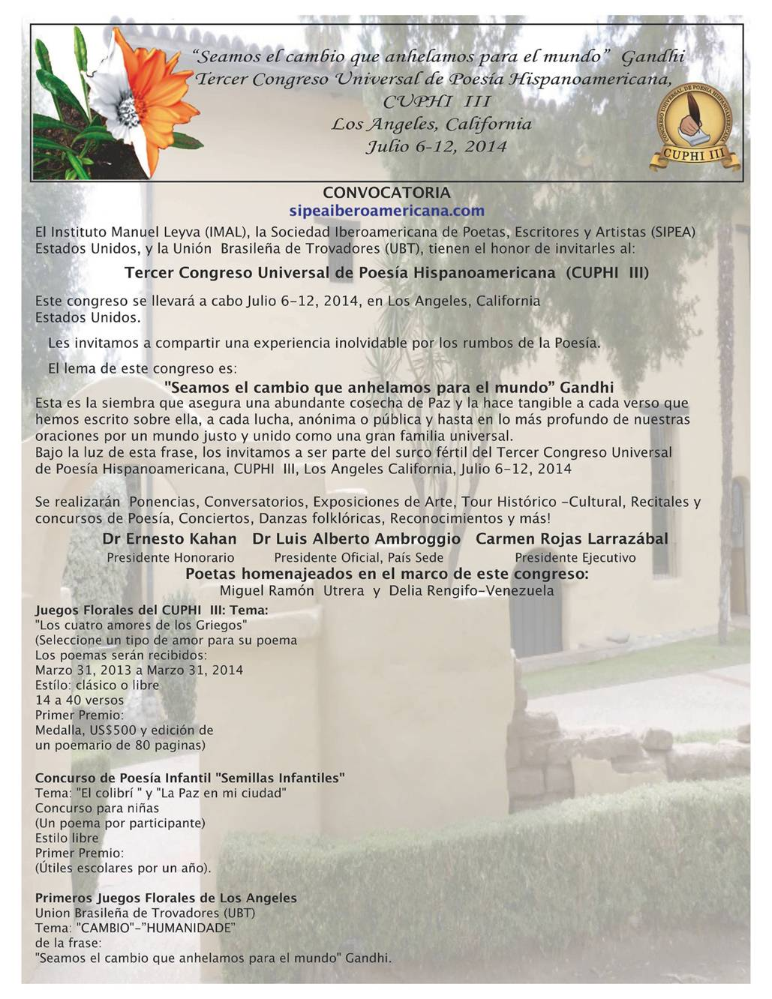

This Tuesday 21 to the 4 evening,in the room of the UNEAC Villena, homenaje al poeta peruano Havier Heraud en el 50 aniversario de su caída.
Category Archive: delivery quick/fast delivery
Fast Delivery/Fast Delivery
May 16 2013
Laboratory of Scriptures this Saturday in the UNEAC in search of hands
The appointment, provided for the 11:00 morning in the room Rubén Martínez Villena of UNEAC, in street 17 corner to H, in Vedado, you will have as a theme in search of hands, title of a suite of musical improvisations performed by the Italian pianist Matteo Franch.
May 05 2013
the open letter from jay-z
Alfredo Prieto's return to the United States, Jay-Z wrote "Open Letter" ("Open letter"), a response to all flit rap. Produced by Timbaland and Swizz Beatz, settled the 11 April on SoundCloud.com. To the 24 hours had already 500 000 tickets, an indicator of the social impact of the problem, almost compulsively present …
May 01 2013
international poetry festival of Havana: cubapoesía program, may of 2013.
Poetry readings in 105 cities for peace in Colombia at least 180 readings of poems and artistic activities will be held between the 9 and the 21 next may in 105 cities of 62 countries as an expression of solidarity with the dialogues of peace between the Government of Colombia and the forces …
Apr 24 2013
Tertulia South: urban poetry, popular, committed and human
By: Wilber Gomez. Good pulse that keeps the Cuban poetry, You can see in the now usual "Tertulia del Sur", that held monthly at the ceramic workshop “Amelia Pelaez”, headquarters of the collective of plastic arts of the capital municipality of 10 October. This meeting, sponsored by the Cuban Institute of the …
Apr 24 2013
the memory and remains
(Words for the exhibition in the workshop Amelia Pelaez, Diez de October) By: Gerilimde Torres, Curator. They say that when a tree is traversed by a nail, Although removing the same, the tree is marked with a split and the footprint is there for their perseverance. This is precisely …

Third Congress of Poesía Hispanoamericana Universal
“We are the change that we want for the world” Gandhi
Third Congress of Poesía Hispanoamericana Universal
CUPHI III
The Angeles, California
July 6-12, 2014
CALL
sipeaiberoamericana.com
The Institute manuel Leyva (IMAL), the Ibero-American Society of poets, Esccritores and artists (SIPEA) United States, and the Brazilian Union of troubadours (UBT), they have the honorde invite you to the:
Third Universal Congress of Latin American poetry (CUPHI III)
This Congress is levará out July 6-12, 2014, in los Angeles California. United States
Posted on:
April 8, 2013
Apr 08 2013
the fiph program in April
Durante el mes de abril el Festival Internacional de Poesía de La Habana en coordinación con la Asociación de Escritores de la UNEAC los invita al siguiente programa: Friday 12 April. 4 PM. Room Rubén Martínez Villena UNEAC. Lectura de Viernes. Poetry in motion. Invited: Juanita Conejero Sábado 13 April. 11 …
Apr 05 2013
call to the 23 international book fair of cuba 2014
Ladies and gentlemen: La 23 International of the Cuban book fair 2014 will be made of the 13 to the 23 February in Havana and to the 9 de marzo en las demás provincias del país bajo el lema Leer es crecer. It will be dedicated to the writer for children Nersys Felipe Herrera, National Prize for literature 2011, …
Sea 26 2013
preside maduro encuentro de intelectuales, artistas y luchadores sociales en caracas
El presidente encargado de Venezuela Nicolás Maduro, encabeza el décimo encuentro de intelectuales, artistas y luchadores sociales en defensa de la humanidad que se celebra en el Hotel Alba Caracas. Maduro, agradeció a los más de 100 dirigentes presentes el irrestricto apoyo que siempre brindaron al comandante Hugo Chávez, en particular en momentos en que …

Recent Comments